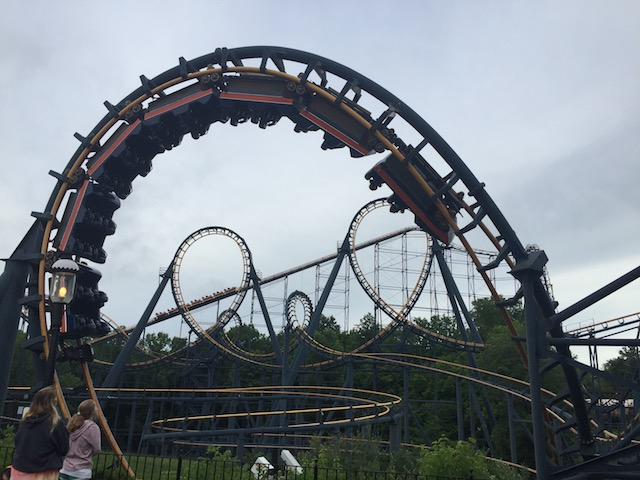
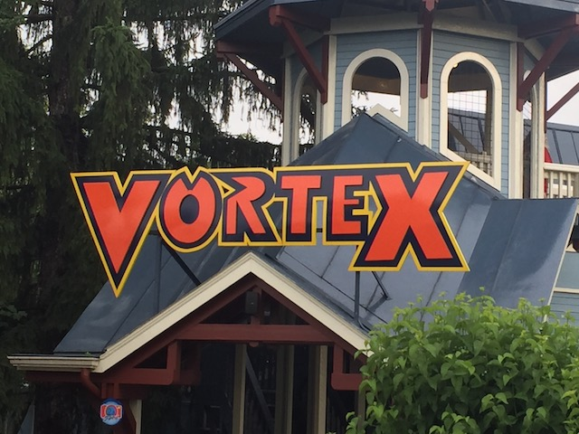
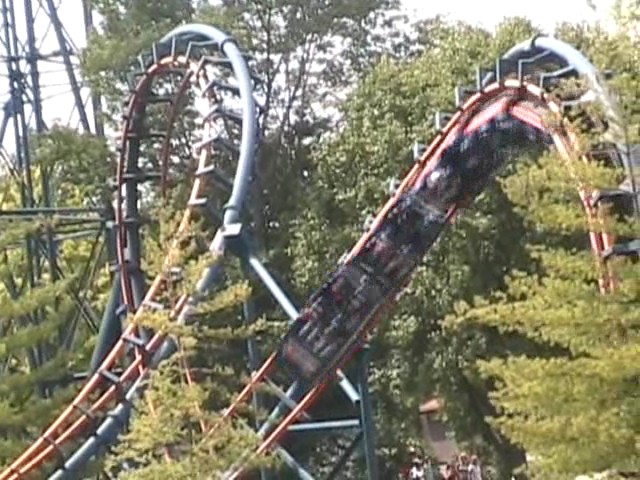
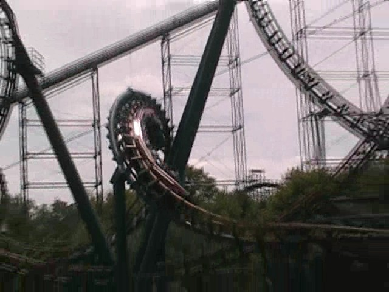

| |

Vortex Review

For today's review, we're gonna have to travel back in time to 2018 when Vortex was at Kings Island. This was the parks Arrow Multi-Looper. Now this was definetly one of the better rides, and these rides really are becoming rare. Especially now that Vortex is now gone. =( We got in the trains, pulled down the restraints, and away we went. After climbing up the huge lifthill, we got a lovely view of Kings Island. But now it's time for the real action. We rolled around a turn and headed into the first drop. The first drop was fun and provided us with some good speed. However, if you sat in the back, then the ride had a treat for you. Ejector air. There actually was a really good pop of ejector air in the back of this first drop. Easily my favorite part of the ride. So if Vortex was still here, I would've definetly recommended sitting in the backseat. We then rose up another hill and actually got some good airtime up in the front here. Yay!!! =) This lead us into some big turnaround. You got a very nice view of Diamondback during this part of the ride. And good news. So far, no head banging. But so far, I wasn't seeing any loops on this Arrow Mega Looper. Well that was about to change soon. We then headed down the drop and went straight into two vertical loops. During both of these vertical loops, you got some pretty good positive Gs. And let's just face it. Back to back Vertical Loops are cool (Most of the time). We then rose up another hill before heading through a quick turn. This gave us a big jolt that gave us a little headbanging before we reached the mid course brakes. And they were pretty harsh. We then headed down a tiny drop that was like 10 feet tall, so we didn't gain that much speed. After that, we rolled around a turn and that turned into some corkscrews. Now I know a lot of people don't like slow corkscrews, but I love them. Slow corkscrews are awesome, and I'm glad that they have them on Viper, and at the time, this. In fact, I think these corkscrews were even slower than the ones on Viper. Anyways, back to the ride. We just rolled through another turn before we came to the batwing. And it too, is slow. In fact, it's almost like riding Viper in Reverse. Now we just need a frozen caveman to take on the ride and we'll be set. =) Suprisingly enough, we have enough speed to actually make through an upward helix. But it's slow. This then leads us to the final brake run. While it wasn't an amazing ride, Vortex was a fun ride and when it came to Arrow Loopers, it's an underrated one. I'm very sad that this ride is now gone. Especially since they announced its demolition out of the blue, and only a year after demolishing Firehawk. Vortex, you will be missed. If there are any Arrow Multi-Loopers left, be sure to give them a ride.
7/10
Location: Kings Island
Opened: 1987
Died: October 27, 2019
Built by: Arrow
Last Ridden: June 28, 2018
Vortex Photos





Home
|